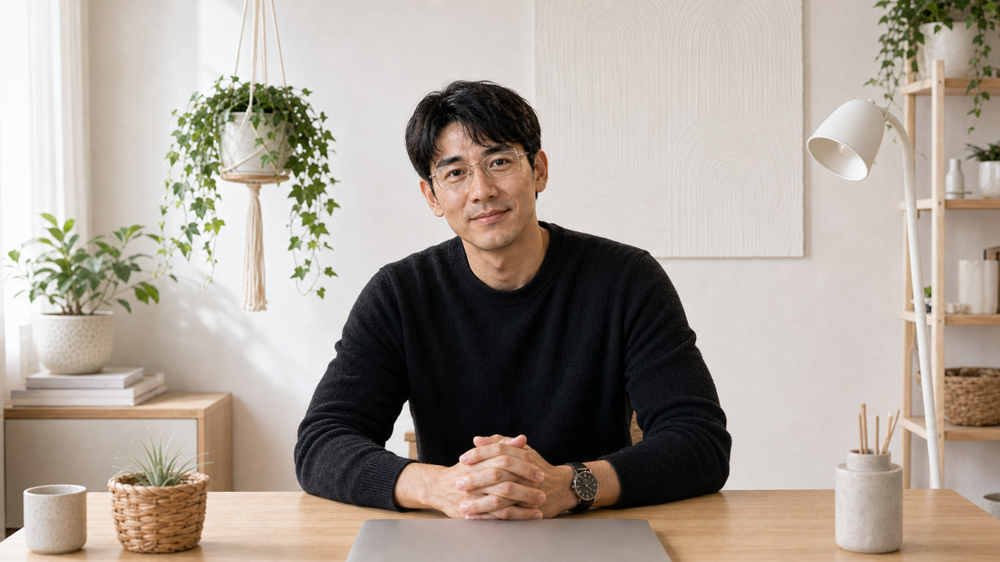
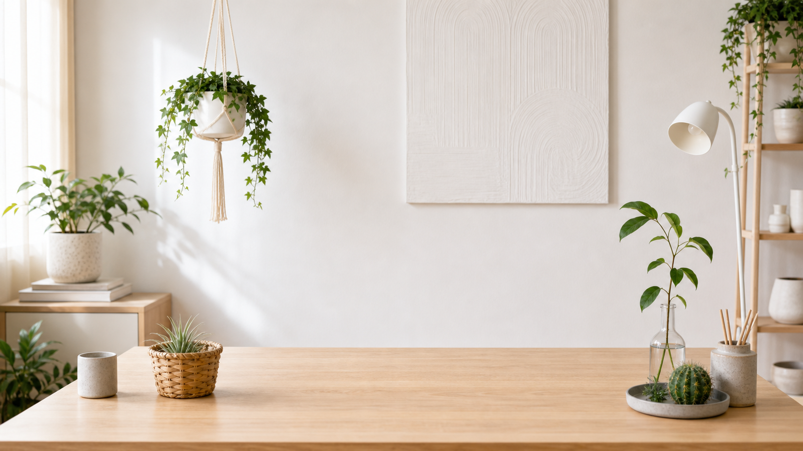
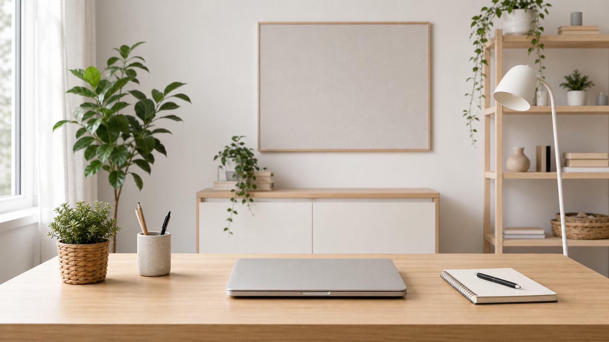
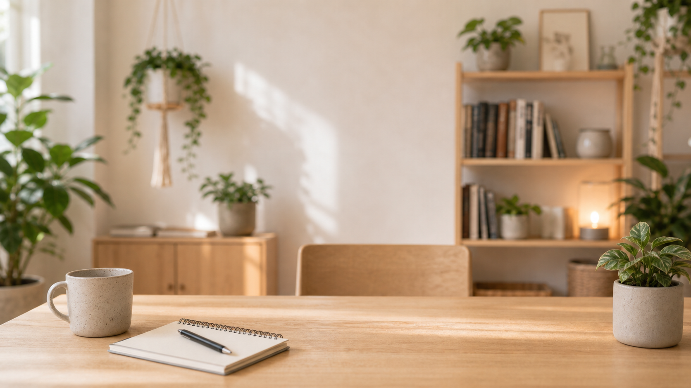

Human First
ผิวจริง สีหน้าเป็นธรรมชาติ แววตานิ่งและใจดี ไม่ glossy หรือ perfect เกินไป
OpenDurian English Confidence Character
จารศักดิ์ / JARSAK v2
จารศักดิ์ v2 คือ English Confidence Coach ที่ดูเป็นคนจริงขึ้น อบอุ่นขึ้น และพร้อมใช้กับคอร์ส วิดีโอ โฆษณา social และ chatbot

Character System
จารศักดิ์เวอร์ชันนี้ลดความเป็นโปสเตอร์ AI แล้วเน้นภาพคนจริง แสงธรรมชาติ ฉากบ้านสว่าง และน้ำเสียงที่คุมได้ระยะยาว
ผิวจริง สีหน้าเป็นธรรมชาติ แววตานิ่งและใจดี ไม่ glossy หรือ perfect เกินไป
แว่นกรอบสแตนเลสทรงเหลี่ยมบาง ทำให้ดูเป็น mentor ฉลาด แต่ยังเข้าถึงง่าย
ห้องขาว โต๊ะไม้ ต้นไม้ และแสงธรรมชาติ แทนโทนมืดทองแบบเดิม
ไม่ดุ ไม่ตัดสิน ไม่ขายฝัน แต่ช่วยให้ผู้เรียนเริ่มพูดได้ทีละก้าว
Location Backgrounds

ฉากหลักสำหรับ hero, course intro และ portrait

เหมาะกับบทเรียนออนไลน์ prompt generator และสไลด์สอน

เหมาะกับ social post, short video และ quote content
Voice Lock
จารศักดิ์พูดเหมือนพี่โค้ชที่เข้าใจความกลัวของคนไทย ทำให้ภาษาอังกฤษเล็กลง และให้ action ที่เริ่มได้ทันที
Production Kit
Prompt Generator
เลือก use case และฉาก แล้วคัดลอกไปใช้สร้างภาพหรือวิดีโอได้ทันที
{kind=link}